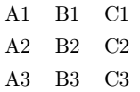
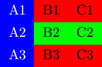
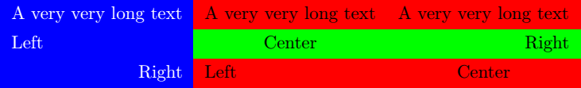
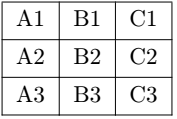
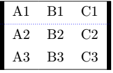
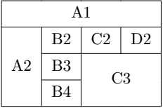
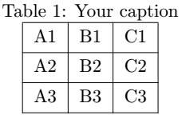

For a long time, the tabular environment was used to build tables. However, writing tables with tabular can be troublesome for beginners and really complex tables can be near impossible to write. Also, tables built with the tabular environment have some typographical issues and, when color is used, can be misread by PDF readers. Therefore, more and more LaTeX users are calling to use the tblr environment from the tabularray package instead.
This tutorial aims to teach beginner to write simple tables with the tblr environment.
tblr environmentThe tblr environment, like HTML and CSS, separates the content and the style of table cells. To do so, it uses keyval arguments to define options for columns, rows or cells. A keyval argument is an argument that takes the form of:
option1=value, option2=valueIf a value contains commas, it must be surrounded by brackets in this way:
mylist = {element1, element2, and element 3}, option2=valueThe tblr environment takes a single mandatory argument, a keyval argument containing a list of options for styling the table. Inside the environnment, each column is separated by &. In LaTeX, & is what we call an active character. If you want to insert an ampersand in your text, you have to use the \& command instead. Finally, each row is separated by the command \\. A really basic table would be this:
% Insert the following commented line before \begin{document}:
% \usepackage{tabularray}
\begin{tblr}{}
A1 & B1 & C1 \\
A2 & B2 & C2 \\
A3 & B3 & C3
\end{tblr}This would result in the following table:
In the mandatory argument, you can define options for columns, rows and cells using those keys:
| Key | Description |
|---|---|
cells | Options for all cells |
cell{<Row-Number>}{<Column-Number>} | Options for specific cells |
columns | Options for all columns |
column{<Column-Number>} | Option for specific columns |
rows | Options for all rows |
row{<Row-Number>} | Options for specific rows |
The values <Row-Number> and <Column-Number> can be a single number (1, for the first column or row), a range (1-3) or a special value (like odd or even). The characters X, Y and Z are converted to the indexes of the last three child, respectively.
The following example use the key bg to set the color of the background of each cell and fg to set the color of the text:
% Insert the following commented lines before \begin{document}:
% \usepackage{color}
% \usepackage{tabularray}
\begin{tblr}{
row{odd} = {bg = red},
cell{2}{2-3} = {bg = green},
column{1} = {bg = blue, fg = white}
}
A1 & B1 & C1 \\
A2 & B2 & C2 \\
A3 & B3 & C3
\end{tblr}
This would result in the following colorful table: 
We already saw two options which can be used to style table cells. However, there are much more. Here are some of them:
| Option | Description | Value |
|---|---|---|
bg | Background color | Color name |
fg | Color of the text | Color name |
halign | Horizontal alignment of the text | l (left)c (center)r (right) |
valign | Vertical alignment of the text | t (top)m (middle)b (bottom)h (head)f (foot) |
mode | Mode of the cell | mathimathdmathtext |
As a trick, you can omit the name of the keys bg, halign and valign and simply enter their value, separated by a comma:
% Insert the following commented lines before \begin{document}:
% \usepackage{color}
% \usepackage{tabularray}
\begin{tblr}{
row{odd} = {red},
cell{2}{2-3} = {green},
column{1} = {blue, fg = white},
cell{3}{1} = {r},
cell{2}{3} = {r},
cell{2}{2} = {c},
cell{3}{3} = {c}
}
A very very long text & A very very long text & A very very long text \\
Left & Center & Right \\
Right & Left & Center
\end{tblr}
This would result in this colorful table:
To add borders to the table, we use other "superkeys" like cell or row. However, instead, we use hlines to set all horizontal borders, hline to set specific horizontal borders, vlines to set all vertical borders and vline to set specific vertical borders.
With those superkeys, we can set several options: the thickness of the border, the color of the border and its style (solid, dashed or dotted). If the brackets are empty, a normal black border will be used. See this basic example:
% Insert the following commented line before \begin{document}:
% \usepackage{tabularray}
\begin{tblr}{
vlines = {},
hlines = {}
}
A1 & B1 & C1 \\
A2 & B2 & C2 \\
A3 & B3 & C3
\end{tblr}
with this result:
or this more complex example:
% Insert the following commented lines before \begin{document}:
% \usepackage{color}
% \usepackage{tabularray}
\begin{tblr}{
vline{1,4} = {3pt},
hline{1,4} = {},
hline{2} = {blue,dotted}
}
A1 & B1 & C1 \\
A2 & B2 & C2 \\
A3 & B3 & C3
\end{tblr}
with this result:
It is way easier to merge columns or rows with tblr than tabular. To do so, you only have to use the r key to set the number of rows or c to set the number of cells. However, and this is very important, you can only use these keys with the cell superkey and they must be surrounded by distinct brackets. Also, unlike with tabular, you don't omit ampersands. See the following example:
% Insert the following commented line before \begin{document}:
% \usepackage{tabularray}
\begin{tblr}{
vlines = {},
hlines = {},
cell{1}{1} = {c = 4}{halign = c},
cell{2}{1} = {r = 3}{valign = m},
cell{3}{3} = {c = 2, r = 2}{c,m}
}
A1 & & & \\
A2 & B2 & C2 & D2 \\
& B3 & & \\
& B4 & &
\end{tblr}
This would result in this table:
table environmentFinally, it might be useful to have a caption for your table and a label. A label allows you to refer to your table with \ref{<label>} to print the number of the table, or \pageref{<label>} to print the number of the page where the table is located.
The caption is defined with \caption{<text>} and the label with \label{<text>}. The caption and the label are instead in the table environment. The table environment is what is called a float. This means that LaTeX might place your table somewhere else in the document to have the best typographical presentation possible.
Here is how we use the table environment:
% Insert the following commented line before \begin{document}:
% \usepackage{tabularray}
\begin{table}
\centering % Center your table
\caption{Your caption} % Caption
\label{tab:my-first-table} % Label
\begin{tblr}{hlines, vlines} % Your table
A1 & B1 & C1 \\
A2 & B2 & C2 \\
A3 & B3 & C3
\end{tblr}
\end{table}
which will result in this table:
If you prefer when the caption is under the table, move the \caption command before the end of the table environment.
In this article, you learned the basic components of a table and how to build them with LaTeX and the tblr environment. Of course, you may do much more. However, this is a strong beginning. In the mean time, use our editor. Our editor uses the tabular environment for now but will soon move to use both tabular and tblr depending of your table. As you may know, or as you will discover, coding tables by hand in LaTeX may become troublesome as soon as your table is a little bit complex. We take care of packages compatibility issues and typographical issues for you.